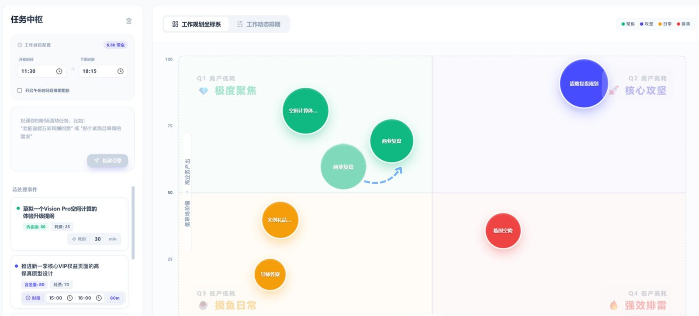

Focenda 专序 · 03 / 04
Focenda 专序 · 03 / 04
Flow Better.
Focus Smarter.
把零散任务，变成可执行的一日安排。起初是课程作业，课程结束后我继续独立打磨。
本地原型 · 数据仅保存在你的浏览器
TL;DR · 30 秒速览
Problem · 问题
设计师的时间被“非设计”吃掉：琐事太多、信息没对齐、难拿出结果。
My role · 我的角色
研究、产品定义、交互与视觉；课程结束后继续独立打磨。
Key decision · 关键判断
先把“排好今天”做扎实：重要度 × 精力分象限，三种节奏生成时间轴，规则全部本地可解释。
Outcome · 结果
10 人 · 2 天内测：9 人用了任务规划，任务完成率 84%，80% 接受自动排期。
问题
设计师的时间，
被“非设计”吃掉了。
对初创公司设计师做半结构化访谈（14 个问题），归纳出三类关键阻塞。
琐事太多
隐性劳动侵蚀创作时间。
信息没对齐
链路断裂导致高频返工。
难拿出结果
设计价值难以量化呈现。
洞察
研究起点和内测发现不一样，
我选择跟着证据收窄。
- 研究起点：为设计师做 AI 协同工作空间
- 内测发现：最被需要的是“排好今天”
- 定位：面向大众的每日规划与动态排期
内测 10 人中学生占 5 人，任务规划使用率 90%。于是先把“规划”做扎实，另外两个模块留作后续。
- Concept
Cut
设计库调用Why内测中最被需要的是“排好今天”，设计库不在主路径上。
Instead保留为概念设计，留作后续版本
- Concept
Cut
周报复盘Why同上；先验证规划与排期，再做汇总。
Instead保留为概念设计，“个性化复盘”放入后续
- Built
Keep任务管理 + 时间规划
Why任务规划是 9/10 位内测者实际用到的部分。
Shipped自然语言录入、四象限、三种节奏、未来七天
规则
智能从哪来：
三步本地规则。
全部在本地运行，无需联网；每一条安排都能说出理由。
关键词打分
每项起始 40 分，按任务描述加减，结果限定在 10–95。
- +25高价值词 → 重要度核心、规划、复盘
- −20低价值词 → 重要度整理、报销、周报
- +25高投入词 → 精力开发、改版、紧急
- −20轻量词 → 精力快速、顺手、草拟
以 50 分为界
- 重要 ≥70 且 精力 ≥70 → 拆成 2–3 个小步骤
- 重要 ≥70 → 适合优先完成
- 重要 <50 且 精力 >50 → 缩小范围或延后
三种节奏排序
- 专注重要×1.2 − 精力×0.15，从高到低无间隔
- 均衡重要 ÷ 精力，从高到低间隔 15 分钟
- 轻松精力从低到高间隔 15 分钟
先锁定固定时间与午休，其余任务依次填入空档；超过下班时间即标为超时。
设计
按价值与精力，
分进四个象限。
一句话输入任务，带上时长与时间；每个任务得到重要度与精力两项评分，气泡位置就是优先级。点任意气泡，看它的评分和执行建议。
准备周五汇报 90分钟
- 时间
- 尚未指定时间
- 预计耗时
- 90 分钟
- 象限
- 专注推进
这项任务重要且需要专注，建议留出完整时间，并先拆成 2–3 个小步骤。
选一种节奏，
生成今天的时间轴。
同一组任务，换一种节奏，顺序与空档就不同。切换试试：专注把高价值任务排在前面，均衡和轻松在任务之间留出缓冲，超过 18:00 下班界限的会标红。
安排建议今天已离线安排 8 项任务，预计需要 7 小时 40 分钟。
今天要完成什么？
先写下一件事，再慢慢排好今天。
可用时间 8.0h 可用
写下任务，也可以直接带上时间，例如：整理房间45分钟 / 下午3点到4点开会添加任务
今日任务
- 9点到10点 交互设计课重要度: 66精力: 38
- 回复导师邮件 15分钟重要度: 74精力: 22
- 阅读论文 45分钟重要度: 58精力: 62
- 完成作品集排版 2小时重要度: 90精力: 66
优先完成重要 · 轻松 · 2 项
- 9点到10点 交互设计课重要 66 · 精力 38
- 回复导师邮件 15分钟重要 74 · 精力 22
专注推进重要 · 费力 · 3 项
- 阅读论文 45分钟重要 58 · 精力 62
- 完成作品集排版 2小时重要 90 · 精力 66
- 准备周五汇报 90分钟重要 84 · 精力 76
顺手处理不急 · 轻松 · 2 项
- 整理灵感素材库 30分钟重要 24 · 精力 16
- 整理课堂笔记 40分钟重要 34 · 精力 30
考虑删减不急 · 费力 · 1 项
- 清理旧版文件夹 60分钟重要 18 · 精力 72
Responsive · 多端
电脑看全局，
手机看下一步。
- Desktop · 1280–1920px多栏工作面：左侧录入与清单，右侧四象限或时间轴。
- Mobile · 320–430px单列工作流：任务清单与规划视图分开，底部三项导航。
- 未来七天点任意一天添加任务，把任务提前放进某一天。
- 本地优先无需账号，可导出 JSON 备份；macOS 小组件同步今日。
结果
内测 10 人 · 2 天。
样本较小，属初步验证。参与者：学生 5 · 职场办公 3 · 自由职业 2。
把反馈变成设计
第一次进入不知道先看哪里首屏只留输入与今日任务
希望有新手引导三步引导 + 示例任务
希望总结更个性化个性化复盘 · 后续版本
从 Focus Flow 到 Focenda：
把术语换成人话。
| 维度 | 早期 · Focus Flow | 现在 · Focenda |
|---|---|---|
| 象限命名 | 极度聚焦 · 核心攻坚 · 摸鱼日常 · 强效排雷 | 优先完成 · 专注推进 · 顺手处理 · 考虑删减 |
| 评分维度 | 含金量 · 耗费 | 重要度 · 精力 |
| 导航结构 | 任务大厅 · 设计图库 · 周报 | 今日 · 未来 · 设置 |

本地原型 · 数据仅保存在你的浏览器
反思
先把“排好今天”做扎实。
跟着证据收窄
研究起点是设计师协作空间，内测显示最被需要的是规划；设计库与周报留作后续。
规则要说得出理由
评分、归类与排期全部是可读的本地规则，每一条安排都能解释。
术语换成人话
“强效排雷”改为“考虑删减”，第一次打开就能看懂。
下一步：个性化复盘，以及设计库调用、周报复盘两个概念模块。内测样本较小，结论有待更大样本验证。